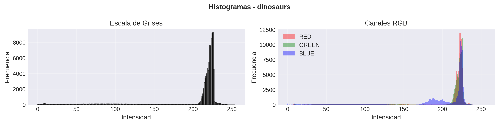
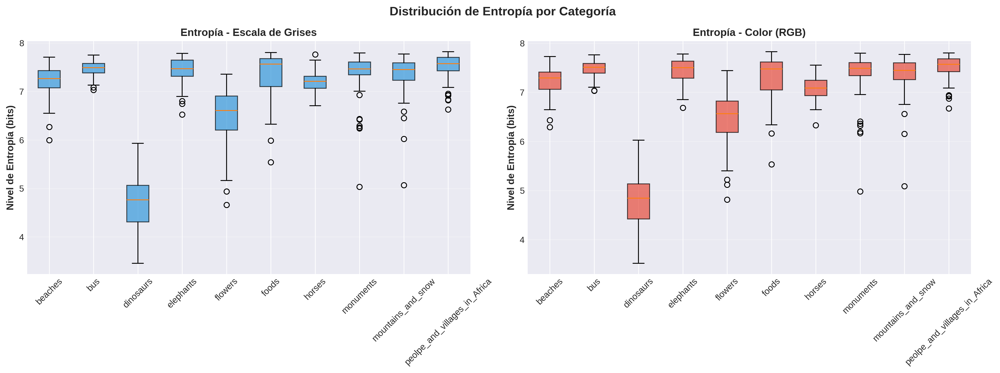
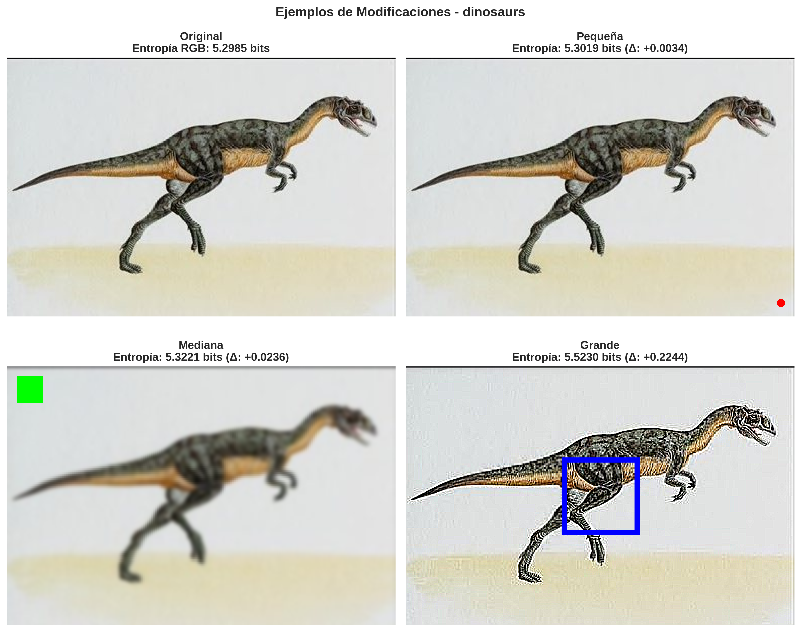
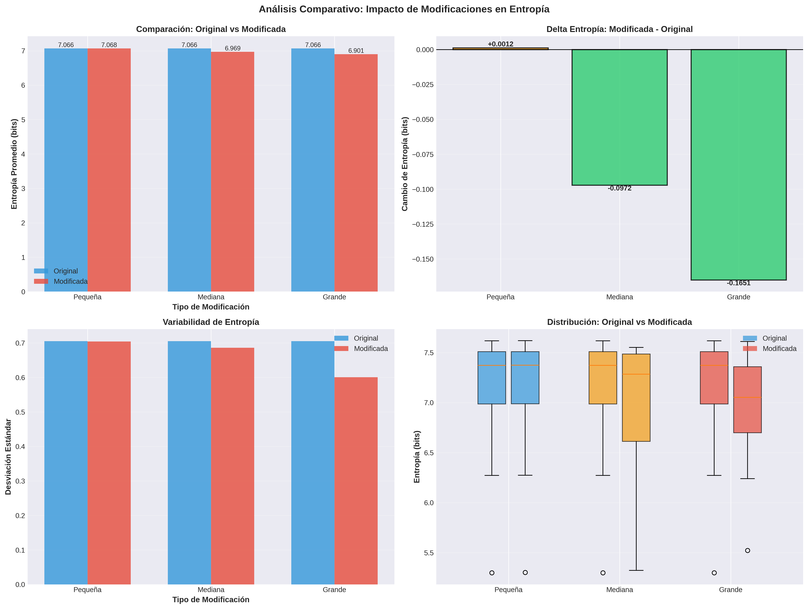

Análisis de Entropía en Imágenes
GIATA - Grupo de Investigación en Análisis de Información y Tratamiento Automático
Universidad Politécnica Salesiana - Ecuador
Generado: 23/04/2026 20:40:54
Introducción
Este informe presenta los resultados del análisis de entropía realizado sobre 900 imágenes organizadas en 10 categorías. Se calculó la entropía en escala de grises y en color (RGB), se realizaron modificaciones en tres niveles y se generaron visualizaciones para el análisis comparativo.
Marco Teórico
¿Qué es la Entropía?
La entropía es una medida de la incertidumbre o desorden en los datos. En el contexto de imágenes, cuantifica la variabilidad de los valores de píxeles. Se calcula usando la fórmula de Shannon: H = -Σ(p·log₂(p)), donde p es la probabilidad de cada valor de píxel.
Entropía en Escala de Grises
Considera un único canal de intensidad (0-255). Valores altos indican mayor variabilidad de luminosidad.
Entropía en Color (RGB)
Se calcula la entropía de cada canal (Rojo, Verde, Azul) independientemente y se promedian. Generalmente es mayor que en escala de grises debido a la información adicional de color.
Datos y Estadísticas
Total de imágenes procesadas: 900
Categorías analizadas: 10
Tabla de Estadísticas por Categoría
| Categoría | Entropía Gray (Media) | Entropía Gray (Std) | Entropía RGB (Media) | Entropía RGB (Std) | Imágenes |
|---|---|---|---|---|---|
| beaches | 7.214833 | 0.304457 | 7.238489 | 0.270655 | 90 |
| bus | 7.469812 | 0.157100 | 7.482515 | 0.150347 | 90 |
| dinosaurs | 4.705511 | 0.500830 | 4.792988 | 0.487948 | 90 |
| elephants | 7.437686 | 0.255177 | 7.452161 | 0.232302 | 90 |
| flowers | 6.489819 | 0.540525 | 6.483843 | 0.530310 | 90 |
| foods | 7.349673 | 0.447191 | 7.314419 | 0.421755 | 90 |
| horses | 7.204612 | 0.193058 | 7.079788 | 0.213947 | 90 |
| monuments | 7.379053 | 0.402095 | 7.391135 | 0.413064 | 90 |
| mountains_and_snow | 7.351393 | 0.393941 | 7.370899 | 0.371156 | 90 |
| peolpe_and_villages_in_Africa | 7.516002 | 0.243557 | 7.518209 | 0.226965 | 90 |
Análisis de Categorías
Categoría con Mayor Entropía: peolpe_and_villages_in_Africa (7.5182 bits)
Las imágenes de esta categoría presentan mayor complejidad visual y variabilidad de colores.
Categoría con Menor Entropía: dinosaurs (4.7930 bits)
Las imágenes de esta categoría son más uniformes y tienen menor variabilidad cromática.
Visualizaciones de Ejemplos

Ejemplos representativos de cada categoría
Histogramas de Ejemplo

Histogramas en escala de grises y canales RGB de ejemplo
Distribución de Entropía por Categoría

Diagramas de cajas y bigotes para escala de grises y RGB
Modificación de Imágenes
Se aplicaron tres niveles de modificación a 10 imágenes:
- Pequeña (~1%): Se agregó un pequeño círculo rojo. Cambio promedio: +0.0012 bits
- Mediana (~10%): Se aplicó un filtro de desenfoque y se agregó un rectángulo verde. Cambio promedio: -0.0972 bits
- Grande (~20%): Se aplicó un filtro de detección de bordes y se agregó un rectángulo azul. Cambio promedio: -0.1651 bits

Ejemplo de una imagen original y sus tres versiones modificadas
Análisis Comparativo de Modificaciones

Gráficos comparativos mostrando el impacto de las modificaciones en entropía
Conclusiones
- La entropía en color (RGB) es consistentemente mayor que en escala de grises.
- Existen diferencias significativas en entropía entre las diferentes categorías de imágenes.
- Las modificaciones pequeñas producen cambios mínimos en entropía, mientras que las grandes generan cambios más pronunciados.
- La relación entre cambio visual y cambio de entropía varía según el tipo de modificación aplicada.